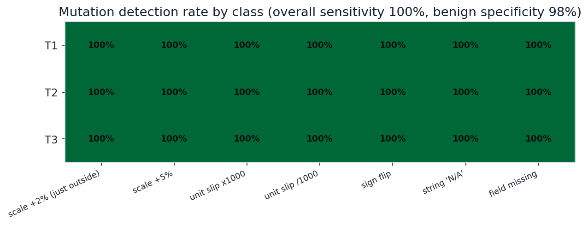
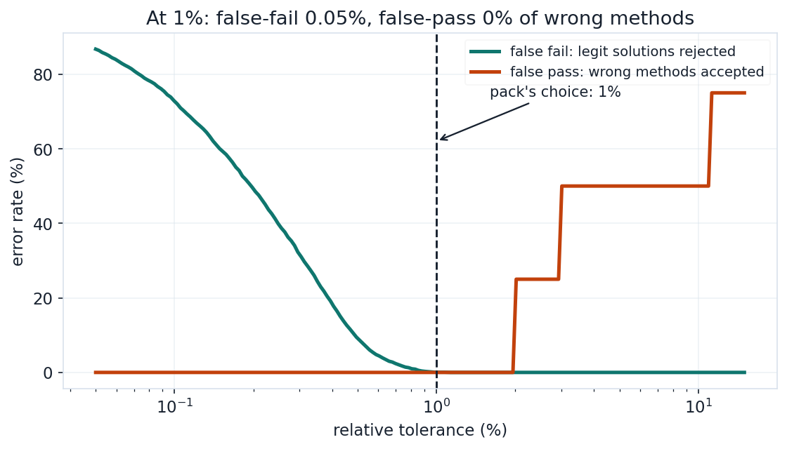
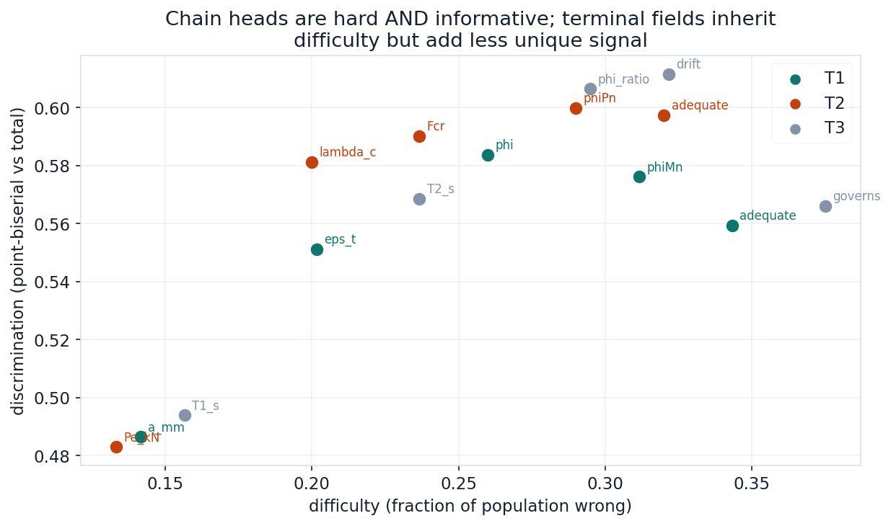

0.5–2%
TOLERANCE OPERATING BAND
Project 6 built machine-gradable tasks; these labs turn the instruments on themselves. The discipline is measurement: a checker has a sensitivity and a specificity, a tolerance is a threshold with error rates on both sides, and a graded field carries a measurable amount of information about ability.
Mutation testing, applied to graders. Each golden answer from the three project 6 tasks gets attacked with a battery of mutants: just-outside-tolerance scaling, unit slips both directions, sign flips, type corruption, missing fields, boolean flips, 79 mutants in all, plus 120 benign variants jittered well inside tolerance that a fair checker must pass. The checkers caught all 79 mutants and passed 97.5% of the benign population. The detection matrix shows the coverage by mutation class, and by construction the only survivors would be errors inside the tolerance band, which is what the next lab is about.

79/79 mutants caught (sensitivity 100%); 117/120 benign in-tolerance variants passed (specificity 97.5%)
A numeric tolerance is a classifier decision boundary, so it deserves a threshold sweep. Two synthetic populations face T1's governing field: legitimate solutions with 0.3% numerical scatter, and wrong-method answers built from the checker's own documented traps, phi omitted entirely at plus 11.1%, the compression-controlled phi of 0.65 at minus 27.8%, plus smaller illustrative slips. Sweeping tolerance from 0.05% to 15% traces false-fail against false-pass: the pack's chosen 1% sits inside the 0.5-to-2% operating band, failing 0.05% of honest work and passing zero wrong methods.

at 1% tolerance: false-fail 0.05% of 4000 legit draws, false-pass 0/4 wrong methods; smallest 2% slip first passes at 2.0%
Classical test theory on the pack's scoring structure. A simulated population of 600 solvers with Beta-distributed ability attempts each task as a chain of steps where errors propagate downstream, mirroring how a_mm being wrong drags eps_t and phiMn with it. Per field, the lab computes difficulty and point-biserial discrimination. The structural finding: chain heads are hard and informative, terminal fields are hardest but partially redundant because they inherit upstream failures, and the sharpest single item is T3's drift field at r = 0.61. Labeled a simulation under a stated error model, because it is one.

N=600 simulated solvers; difficulty 0.13 to 0.38; top discrimination T3:drift r_pb = 0.61; propagation makes terminal fields partially redundant